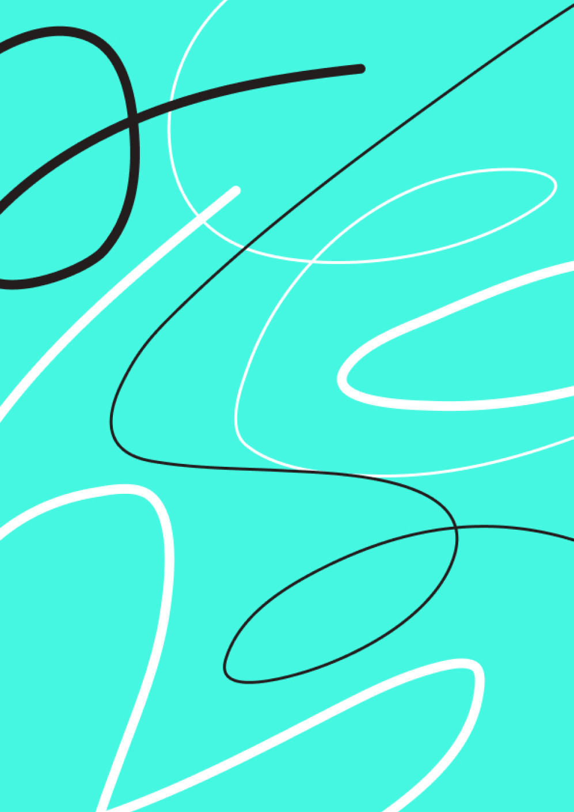

Танцы в удовольствие, чтобы выпустить
наружу свою внутренюю богиню
Танцы наедине с самим собой,
без переживаний о социальном
неодобрении
Танцы в гармонии с самим собой,
научись слушать себя и свое тело
Самосовершенствование
Поддержание своего тела в тонусе,
укрепление здоровья
Мы сделаем так, чтобы каждый человек
обрел уверенность в себе, благодаря
танцам.
Логотип – состоит из названия
бренда. Специально подобран шрифт
с буквами, графема которых разная.
Каждая буква уникальна, потому что
танцы – это разнообразие.
Слова в логотипе соединяются друг
с другом, потому что танец – это одно
целое
Охранное поле логотипа
рассчитывается по модулю высоты
прописной буквы «и».
Логотип может использоваться только
в двух цветах, в зависимости от того
на каком фоне он расположен (светлом
или тёмном).
Располагаем в верхнем левом углу.
Допустимо ставить логотип по центру
в исключительных случаях (когда углов
нет, например, на бутылках или на круглых
формах).
5 колонок.
Margin – 10% относительно ширины
формата.
Межколонник – 5% относительно
ширины формата.
Фотографии для социальных сетей
выбираются с учётом следующих
критириев:
1.Люди в танцевальной одежде
2.Выглядят уверенно
3.Взгляд человека на фото должен смотреть свеху вниз
(избегать обратное, так как на фото должна быть уверенность)
4.Люди на фото должны выполнять различные танцевальные
движения либо позировать


Нейтральные фотографии, на которых яркими выглядят
именно люди, а не окружающее их пространство
Групповые фото
Один человек на фото в позе


Человек или группа людей в движении

Бывают разные движения: есть движения отрывистые,
а есть плавные переходящие друг в друга, есть чёткие
и пересекающиеся движения, а есть слегка заметные.
Все эти движения мы делаем нашим телом, образуя
своеобразные линии, которые складываются в рисунок -
в танец.
Три паттерна
Применяются на одежде и в мерче.
Допустимо использовать части паттерна для социальных
сетей.
Третья (зеленая линия) вводится в гораздо мешьшем
количестве, чем линии двух других цветов. Она появляется
только на темном фоне и иногда на белом.
Допустимо использовать только два варианта линий:
Stroke 10px
Stroke 3px
От характера и настроения текста в постах, плакатах,
или банерах зависит характер и жирность линий.
Графика напрямую взаимодейсвует с фотографией.
С помощью тех же линий мы повторяем движения
человека на фото.
Наша миссия – сделать людей уверенными
в себе с помощью танцев, поэтому
мы разговариваем с пользователем
в побудительной форме. Уверенность – это
еще и смелось, поэтому мы говорим чётко
и прямолинейно, без стеснения и поиска
правильных слов (если призываем человека
флексить, значит так и говорим). Но главное –
несмотря на прямолинейность, мы бережём
друг друга, поддерживаем и не говорим
гадости.